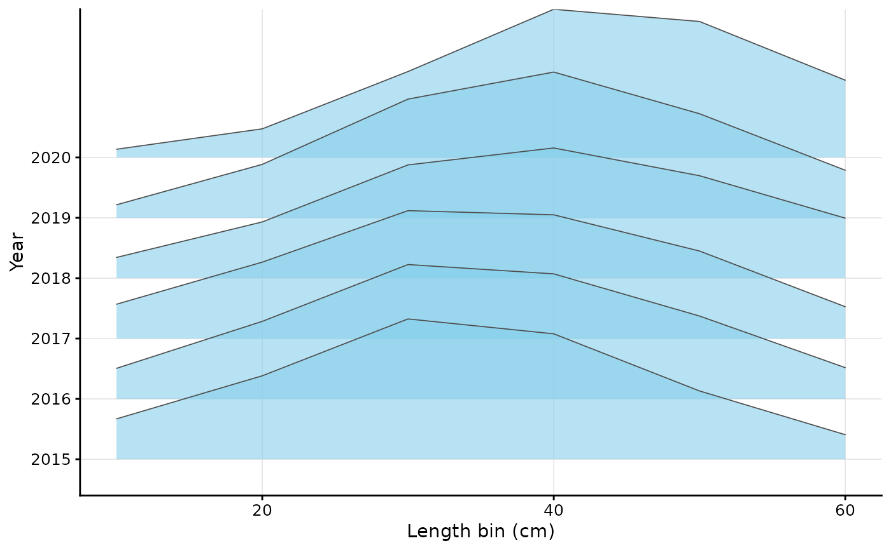

Sums the draws from scale_comps() over strata within levels of
grps, converts them to proportions and plots the median composition
of each level as a ridgeline, stacked along plot_y.
Usage
scaled_ridge_plot(
scaled_comp = NULL,
grps = NULL,
plot_y = NULL,
plot_facet = NULL,
scales = "free_y",
bin_range = NULL,
xlab = "Length bin (cm)"
)Arguments
- scaled_comp
Data frame from
scale_comps().- grps
Character vector of grouping variables to aggregate to; must contain
plot_y(andplot_facet, if used).- plot_y
Variable name (string) to stack on the y-axis (e.g.
"Year").- plot_facet
Optional variable name (string) to facet by.
NULL= no facet.- scales
Passed to
facet_wrap(), default"free_y".- bin_range
Optional numeric vector
c(min, max)to restrict plotted bins.- xlab
x-axis label (the bin variable)
Examples
dat <- data_prep(ex_comp, c("Year", "Season", "Vessel", "trip"), "length", "count")
fit <- fit_model("Year", "Season + Vessel", data = dat, backend = "TMB",
iter = 300, warmup = 100, thin = 2)
#> Model formula: tot_by_bin ~ 0 + bin + factor(Year):bin + (1 | bin:Season) + (1 | bin:Vessel)
sc <- scale_comps(ex_catch, "catch", fit, grps = c("Year", "Season", "Vessel"))
scaled_ridge_plot(sc, grps = "Year", plot_y = "Year")
